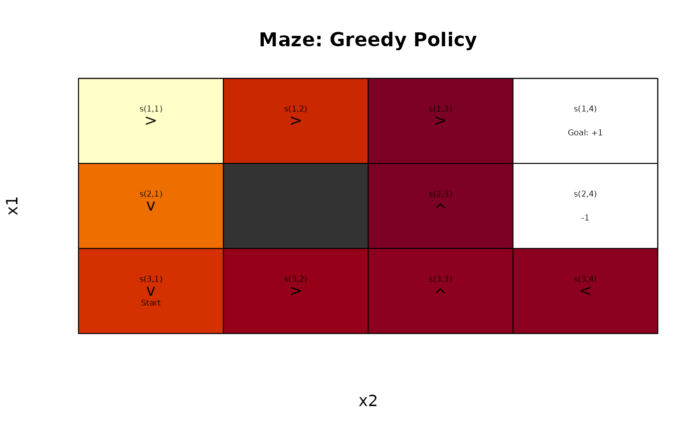

Extract a greedy policy or select a greedy action from a solved model or a Q matrix.
Value
greedy_action()returns the action with the highest q-value for states. Ifprob = TRUE, then a vector with the probability for each action is returned.greedy_policy()returns a data.frame with the policy.
greedy_policy() returns the greedy policy given Q.
References
Sutton, R. S., Barto, A. G. (2020). Reinforcement Learning: An Introduction. Second edition. The MIT Press.
See also
Other policy:
action(),
expected_return(),
policy(),
policy_evaluation(),
regret(),
visit_probability()
Examples
data(Maze)
Maze
#> MDPModel, MDP - Stuart Russell's 3x4 Maze
#> Discount factor: 1
#> Horizon: Inf epochs
#> Size: 4 actions / 11 states
#> Storage: transition prob as matrix / reward as matrix. Total size: 28.8 Kb
#> Start: s(3,1)
#> Model list components: ‘name’, ‘discount’, ‘horizon’, ‘states’,
#> ‘actions’, ‘start’, ‘transition_model’, ‘reward’, ‘info’,
#> ‘absorbing_states’
# create a random policy and calculate q-values
pi_random <- random_policy(Maze)
pi_random
#> state V action
#> 1 s(1,1) NA left
#> 2 s(2,1) NA up
#> 3 s(3,1) NA right
#> 4 s(1,2) NA left
#> 5 s(3,2) NA up
#> 6 s(1,3) NA right
#> 7 s(2,3) NA left
#> 8 s(3,3) NA up
#> 9 s(1,4) NA up
#> 10 s(2,4) NA left
#> 11 s(3,4) NA right
V <- policy_evaluation(Maze, pi_random)
V
#> s(1,1) s(2,1) s(3,1) s(1,2) s(3,2) s(1,3)
#> -40.0000000 -40.0000000 -9.0419397 -40.0000000 -5.1330044 0.8196383
#> s(2,3) s(3,3) s(1,4) s(2,4) s(3,4)
#> -0.2237390 -0.8714694 0.0000000 0.0000000 -1.4000000
# calculate Q values
Q <- Q_values(Maze, V)
Q
#> up right down left
#> s(1,1) -40.0400000 -40.0400000 -40.0400000 -40.0400000
#> s(2,1) -40.0400000 -36.9441940 -15.2735518 -36.9441940
#> s(3,1) -33.4574944 -9.0505975 -8.6910462 -12.1777458
#> s(1,2) -35.9580362 -7.3842894 -35.9580362 -40.0400000
#> s(3,2) -5.1377445 -1.7637764 -5.1377445 -8.3001527
#> s(1,3) -3.2842894 0.8195899 -4.1189912 -31.9804101
#> s(2,3) 0.4933367 -0.8451831 -0.8595494 -0.2241743
#> s(3,3) -0.8722917 -1.2695208 -1.3904760 -4.2559244
#> s(1,4) 0.0000000 0.0000000 0.0000000 0.0000000
#> s(2,4) 0.0000000 0.0000000 0.0000000 0.0000000
#> s(3,4) -1.0671469 -1.4000000 -1.3871469 -0.9771755
# get the greedy policy form the Q values
pi_greedy <- greedy_policy(Q)
pi_greedy
#> state V action
#> 1 s(1,1) -40.0400000 right
#> 2 s(2,1) -15.2735518 down
#> 3 s(3,1) -8.6910462 down
#> 4 s(1,2) -7.3842894 right
#> 5 s(3,2) -1.7637764 right
#> 6 s(1,3) 0.8195899 right
#> 7 s(2,3) 0.4933367 up
#> 8 s(3,3) -0.8722917 up
#> 9 s(1,4) 0.0000000 up
#> 10 s(2,4) 0.0000000 up
#> 11 s(3,4) -0.9771755 left
Maze_with_policy <- add_policy(Maze, pi_greedy)
gw_plot(Maze_with_policy, main = "Maze: Greedy Policy")

# find the greedy/ epsilon-greedy action for the top-left corner state
greedy_action(Maze, "s(1,1)", Q, epsilon = 0, prob = FALSE)
#> right
#> right
#> Levels: up right down left
greedy_action(Maze, "s(1,1)", Q, epsilon = 0, prob = TRUE)
#> up right down left
#> 0 1 0 0
greedy_action(Maze, "s(1,1)", Q, epsilon = .1, prob = TRUE)
#> up right down left
#> 0.025 0.925 0.025 0.025
# we can also specify a model with a policy and use the internal Q-values
greedy_action(Maze_with_policy, "s(1,1)", epsilon = .1, prob = TRUE)
#> up right down left
#> 0.025 0.925 0.025 0.025